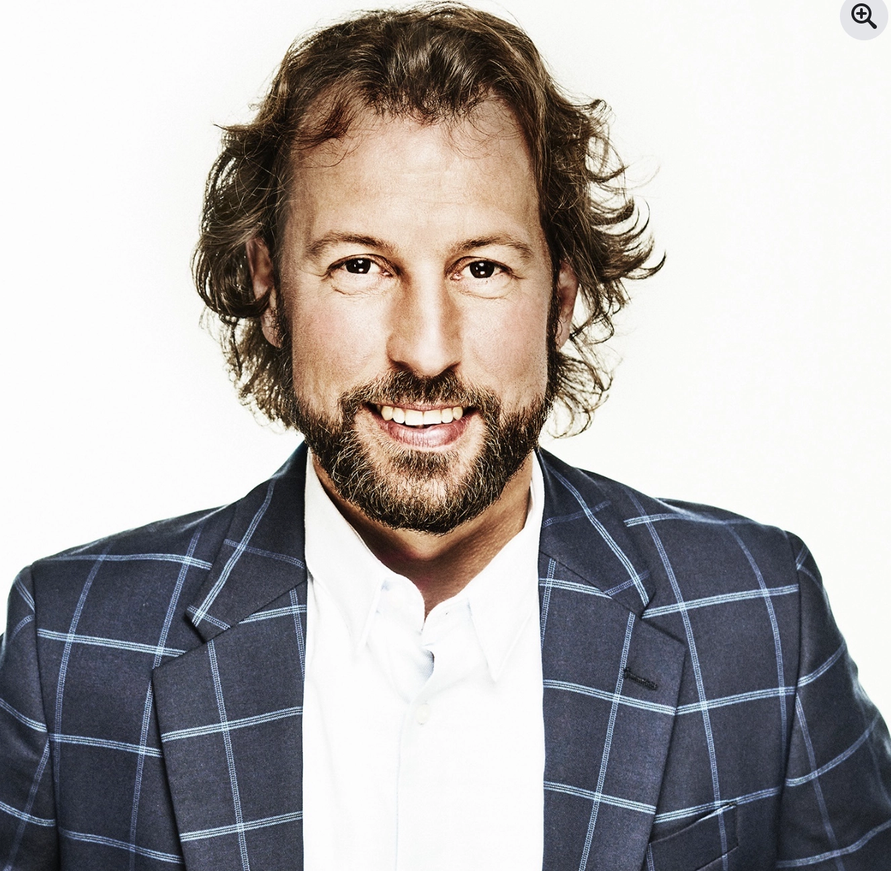
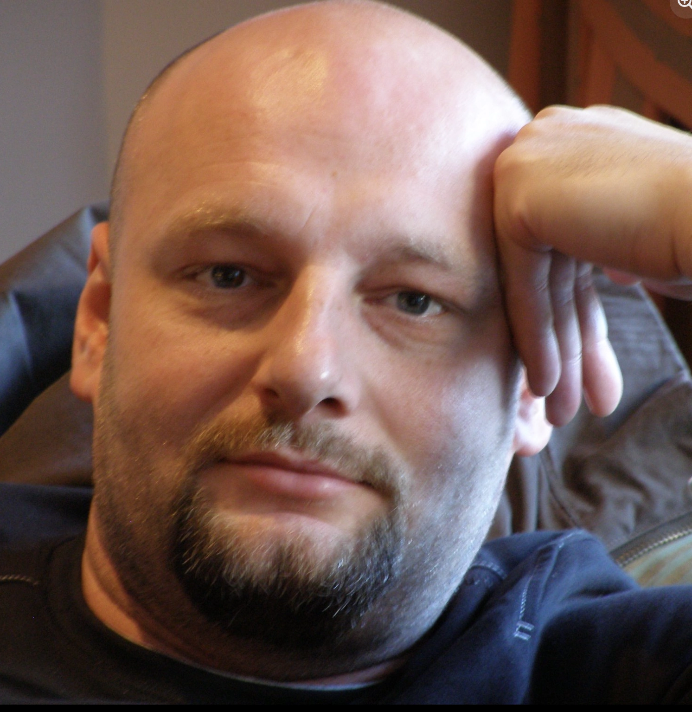
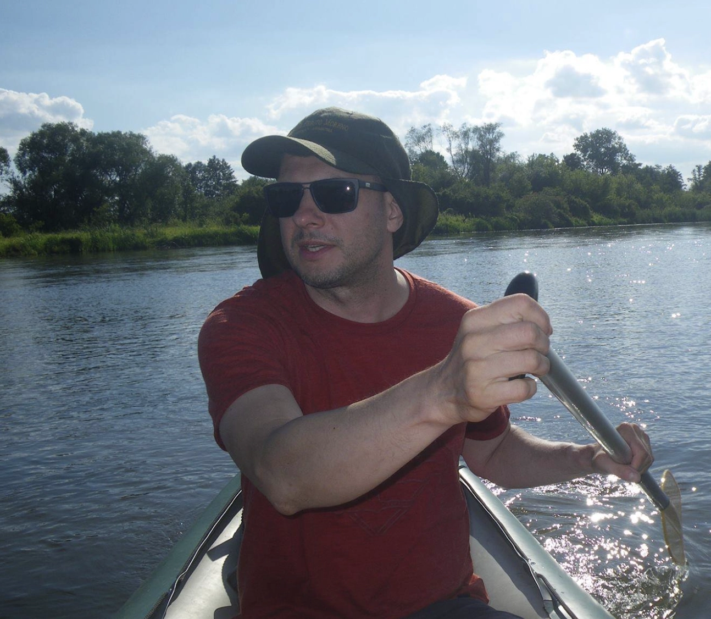

"Šest společných nezapomenutelných dní po Kostarice od Turrialba, přes NP Tortugiero po NP Cahuita spolu s Martinem. Martine moc děkujeme za všechny zážitky, záživné vyprávění, trpělivé odpovědi na všechny naše otázky i celou řadu užitečných rad pro další cesty Latinskou Amerikou. Pokud se kdokoliv chystáte do Nikaraguy, Kostariky, Panamy, určitě Martina doporučuji jako skvělého průvodce a znalce místních poměrů. PURA VIDA Martin!"

Lukáš Hegner
"Chtěl bych touto cestou poděkovat Martinovi za skvělou dovolenou v Kostarice. Byla to jízda plná skvělých zážitků zorganizovaná od přistání až po odlet z Kostariky, bez falešných příkras přesně v reálném duchu místa. Doporučuji každému. Martin je starostlivý a milý chlápek, který se snaží udělat co je v jeho možnostech a prostředí možné. Rád vám naplánuje vše dle vašich představ. Martine ještě jednou moc díky. PURA VIDA"

Ivo Karkoška
"¡Hola! Me acabo de unir porque considero que don Martín es una excelente persona, trabajadora, honesta y muy responsable. Además de ser una persona de excelentes principios morales."

Oscar Ugalde
"Náš sen je zase o kousek blíže realitě. V loni jsme byli již po druhé na Kostarice a vždy využili služeb a pomocí Martina, po loňské návštěvě jsme se rozhodli koupit na Kostarice pozemek a opět jsme Martina požádali o pomoc. Pozemek našel, domluvil vše u prodávajícího, advokátů kteří pozemek prověří a připraví podklady pro smlouvy. Jsme rádi že jsme ho už před lety oslovili a těšíme se až z nás budou sousedé. Je to férový člověk, měli jsme u něho vždy zázemí a už se moc těším na nový domov."

Lucie Hormandlová Stajsková
"Konečně jsem se dostala k poděkování Martinovi a jeho úžasné manželce Tanii. Martin zajistil letenku, náš výběr sedadel, poskytl informace co nás může čekat na letišti. V San José byla zajištěna doprava do ubytování, které bylo naprosto úchvatné. Martin nám pomohl i s místním telefonním číslem. Pomohou vám zajistit ubytování, autobusy i výlety. Ochota, dobrosrdečnost, naprostá spolehlivost – služby mohu jen doporučit."
Lucie Hormandlová Stajsková
"Musím ocenit velmi příjemný přístup a znalost míst, kde bylo minimum turistů. Poznali jsme místní kulturu a program byl opravdu nabitý. Od koupačky ve vodopádu, procházkou v národním parku a spoustu zvířat (lenochodi, opice, želvy) až po nezapomenutelný zážitek u místního šamana a ochutnávku kakaových bobů. Prostě dovolená v místním koloritu. Prostě Pura vida."

Romana Kubíčková
"Symbioza těchto dvou lidí – rodilé costaričanky a jejího českého manžela dává tušit, že budete ve správných rukou. Sehnali mi ubytování, naplánovali výlety, díky nim jsem poznal Turrialbu, podíval jsem se na krásná místa, dokonce i do Panamy! Costa Rica, to je ráj na zemi – pro krásnou floru i faunu. PURA VIDA!"

Pavloušek Tomáš
"Lo conozco desde el primer día en que llegó a este mi bello país Costa Rica. Desde ese momento veía que íbamos a hacer grandes amigos. Me parece genial el gran cariño y amor que él le tiene a este país, aún mucho más de lo que muchos ticos le puedan tener. Me siento afortunado de tener a Martín como mi amigo."

Csmilo Votos Desd
"Tito lidé, jako je Martin, vám sdělí podstatné informace a rady, které vám usnadní cestování. Mají danou lokalitu procestovanou křížem krážem. Těch pár korun, které takovýmto lidem jako je Martin dáte za jejich služby, se vám několikrát vrátí. Doporučuji služby Martina – věřte, že nebudete litovat. Děkuji Martine za společně strávené dva dny. Děkuji, Míra."
Miroslav Liška